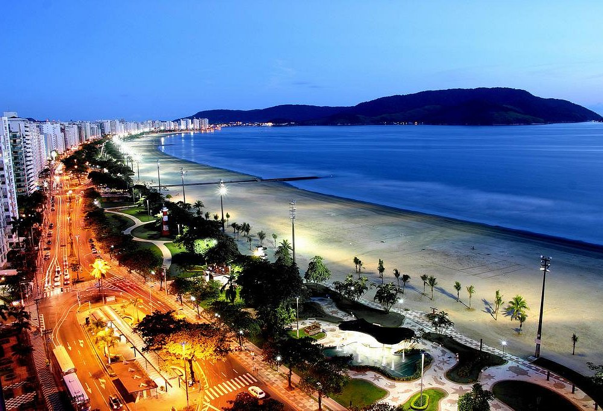

A região:
A Região Metropolitana da Baixada Santista está localizada no litoral paulista sendo sede do Porto de Santos, o maior e mais importante complexo portuário da América do Sul, em torno do qual se desenvolve a economia regional. É a região paulista que possui o menor número de municípios (nove), ocupando apenas 1% do território estadual, e a segunda maior densidade demográfica do Estado.
Comparativo demográfico:
| Cidade | População estimada(2025) | Área (km²) |
|---|---|---|
| Bertioga | 67.436 | 491,546 |
| Cubatão | 114.870 | 142,879 |
| Guarujá | 294.871 | 144,794 |
| Itanhaém | 118.495 | 601,711 |
| Mongaguá | 64.845 | 142,755 |
| Peruíbe | 70.629 | 326,216 |
| Praia Grande | 368.539 | 149,652 |
| Santos | 429.547 | 281,033 |
| São Vicente | 338.326 | 148,151 |
Cidades da região:
Transporte:
A região está situada a menos de 100 km da capital São Paulo e das indústrias da região do ABC, além de possuir excelentes conexões de transporte viário através do Sistema Anchieta - Imigrantes, Rodovia Manuel da Nóbrega e a BR-101 (que liga a Baixada Santista ao município do Rio de Janeiro), duas linhas ferroviárias que atravessam todo o Estado de São Paulo desembocam no Porto de Santos, interligando a região a municípios importantes como São Paulo, Campinas, Bauru e Araraquara. O Porto de Santos faz a conexão de cargas e passageiros com o resto do Brasil e com o mundo.
Feito por: André Silva, Camila Martinez, João Gabriel e Antony José